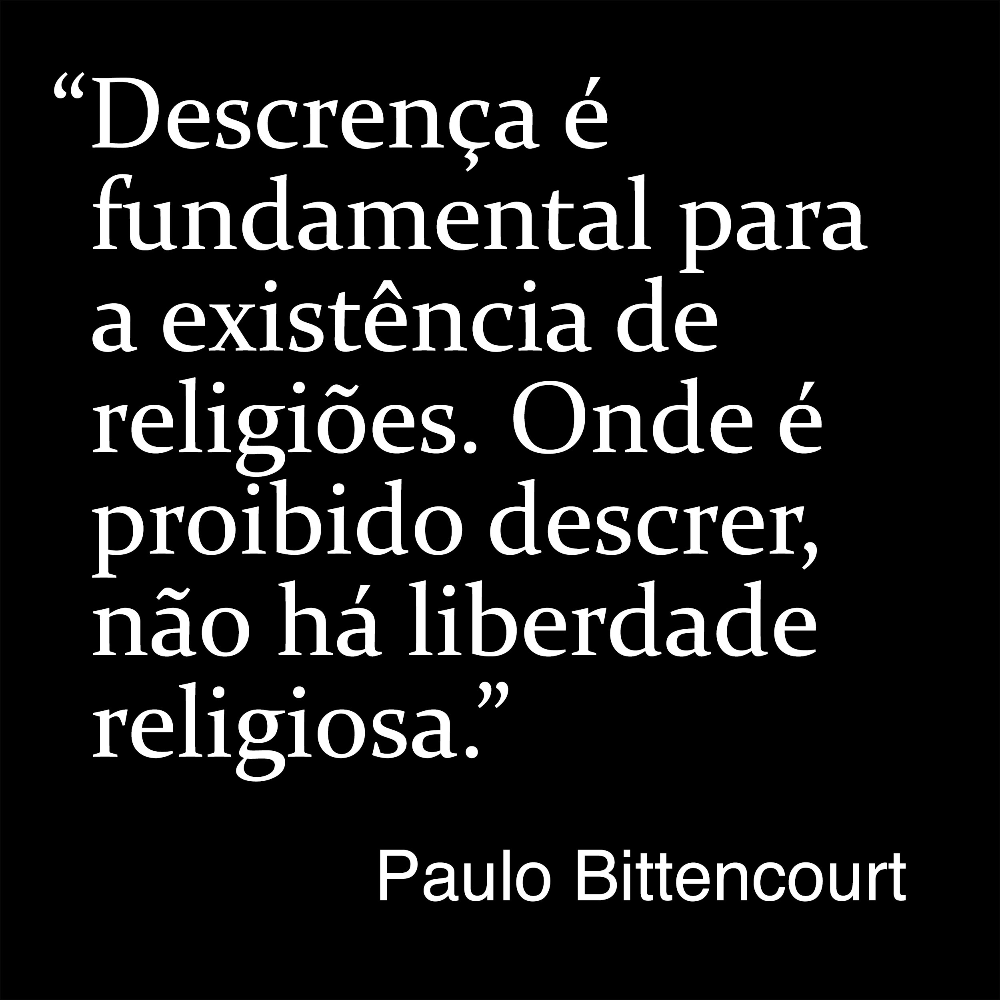

Frases e Pensamentos
Citações de Paulo Bittencourt (5/6)
Livros Liberto da Religião, Perdendo Tempo Com Deus e Com Zeus Não Se Brinca
29
“Se Deus existe, não é necessário nele acreditar, e se não existe, muito menos.”
30
“Descrença é fundamental para a existência de religiões. Onde é proibido descrer, não há liberdade religiosa.”
31
“Quem não se contenta com nada menos que ser 100% intelectualmente honesto é ateu, pois Ateísmo é o único posicionamento livre de incoerências e contradições.”
32
“A Bíblia é tão má que o Alcorão é baseado nela.”
33
“Se você consegue fazer as pessoas acreditarem que há um homem invisível no céu, consegue fazer as pessoas acreditarem em qualquer coisa, até que ele precisa de dinheiro.”
34
“É indiscutível que o Cristianismo está fundamentado em sacrifício humano e filicídio. O que é a morte do Filho na cruz senão sacrifício humano para aplacar a ira do Pai?”
35
“Não há prazer maior que ser um livre-pensador.”